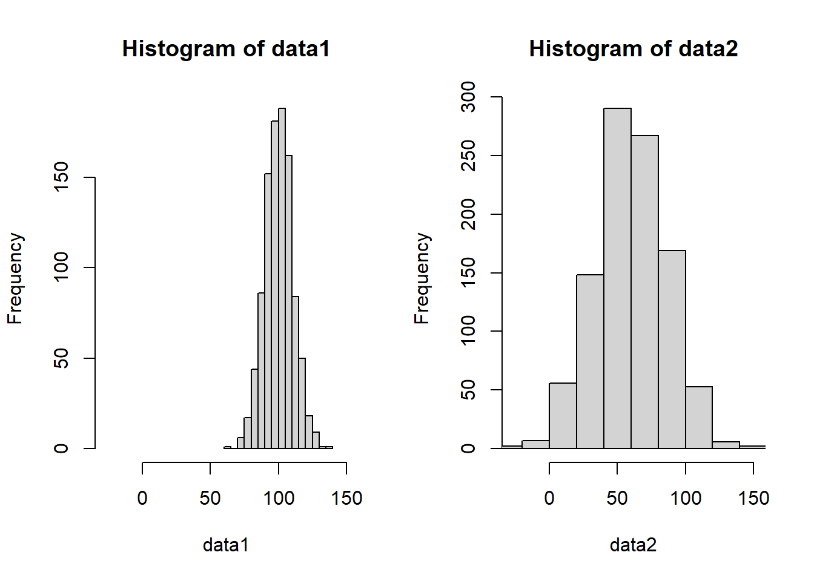

Chapter 1 Unit 1: The Basics
1.2 Week 2: Plotting Data
1.2.1 Normal Distributions
First we’ll generate a normal distribution with the rnorm() function. This takes 3 arguments: n, mean, sd, which you can see filled in below. While we could print out a list of all these values, it’s not easy to understand a list of numbers
normal_dist <- rnorm(n = 100, ## 100 samples
mean = 10, ## with a mean of 10
sd = 1 ## and a standard deviation of 1
)
normal_dist## [1] 7.461839 10.456571 10.404756 10.026180 8.645048 9.480195 8.549102
## [8] 11.175060 10.401080 10.532174 9.322400 10.194063 9.856722 10.036442
## [15] 9.381447 9.806179 9.175580 9.659158 9.075341 8.600018 10.328124
## [22] 9.867095 7.276169 9.520823 9.350129 9.234024 7.759589 11.383378
## [29] 10.807379 9.511660 10.437122 7.703788 9.100275 9.896336 10.491274
## [36] 11.232263 10.340884 10.522429 9.416830 10.023738 9.973556 9.422106
## [43] 7.478263 9.168345 9.628618 7.550416 9.254204 9.242008 10.732317
## [50] 10.411983 8.994269 10.880301 8.887697 9.597060 10.919286 8.821765
## [57] 12.144552 9.127145 10.690373 8.955970 10.564313 9.083137 10.703141
## [64] 10.158113 9.674965 8.282687 11.096314 10.796774 12.157927 11.877305
## [71] 9.276236 9.926104 9.840835 9.447622 10.780773 8.677770 9.608623
## [78] 9.562250 10.867946 9.150706 11.420946 11.196430 10.145878 9.510416
## [85] 11.167488 10.682747 10.173062 10.732322 9.724174 9.540781 9.704721
## [92] 8.234968 10.832485 8.173645 9.321298 8.851190 11.387092 10.147572
## [99] 11.247071 10.396218Another better way to look at data would be to visualize or plot it. One way to to that is with a histogram, which groups continuous values into bins, then plots the frequency for each bin.
In R, we use the hist() function to plot a histogram of data. We can (try to) control the number of bins with the breaks argument, but note that it doesn’t always match up. The hist() function will adjust based on the distribution of the data.

Another way to visualize this would be with a d
1.2.2 What is normal?
1.2.2.1 Quantitative summaries
5num summary * Min, 25th percentile, median, 75th percentile, Max
We can print the table in R by calling its name.
## Min. 1st Qu. Median Mean 3rd Qu. Max.
## 7.276 9.219 9.824 9.824 10.540 12.158Mean, standard deviation
1.2.2.2 Meaningful Comparisons
How to compare apples to oranges? Standardize the units / standardize the data
Are these the same distribution?
Any issues??

Are they the same?

Numerically / tabularly
Often times its important to tables of summary statistics
## Min. 1st Qu. Median Mean 3rd Qu. Max.
## [1,] 62.55605 92.93847 99.55269 99.79568 106.73526 131.1363
## [2,] -17.99614 42.72685 59.52201 60.08914 77.28565 144.4799Making the table a little nicer. Also an example of conditional programming.
## NULLWhen working with Rmarkdown we can take advantage of knitr and pandoc to nice looking tables even easier.
| Min. | 1st Qu. | Median | Mean | 3rd Qu. | Max. | |
|---|---|---|---|---|---|---|
| data1 | 62.55605 | 92.93847 | 99.55269 | 99.79568 | 106.73526 | 131.1363 |
| data2 | -17.99614 | 42.72685 | 59.52201 | 60.08914 | 77.28565 | 144.4799 |
How transform the data
Simple transformation (multiply all values by 100) * to convert units * other examples?
Complex transformations * log-transformation (DEE: not a fan) * z-scores (DEE: a better option)
Why transform the data? * Real world applications? * Is it always appropriate to transform data?
1.5 Week 5:
For now, I have 3 main chapters for each of the main sections: * Basics of data science / R 1 * Applications/critiques using IPUMS data 2 * Student-driven projects 3
Each of these Chapters contains multiple sections. We’ll likely want to break these sections out into their own .Rmd files as they get fleshed out. For now, I’ll try to keep the abundance of files limited.
NOTE: As these actually get filled out, we will probably want to insert different parts to the book (EG, the content of Unit 1 is covered in Part I).
* Declare parts with # (PART) Part I {-} immediately before the first chapter # it contains.
Topics to include: * What is data? * Everything can be data * How do we interpret data * Tables * Plots * Univariate distributions * What can they tell us * Multi-modality in distributions * Categorical vs continuous data * Don’t need to get ahead of this yet * Add in a grouping category - multi state/multi-national dataset * Ttest / anova
Type of Data: Age distributions Specifically generate a dataset with old/young folks over-represented to highlight a bimodal distribution
Start with single state/country Add a second state/country to demo ttest Add more to demo anova
Alternatively, income by education level - may be more interesting/relevant to college students (or depressing)